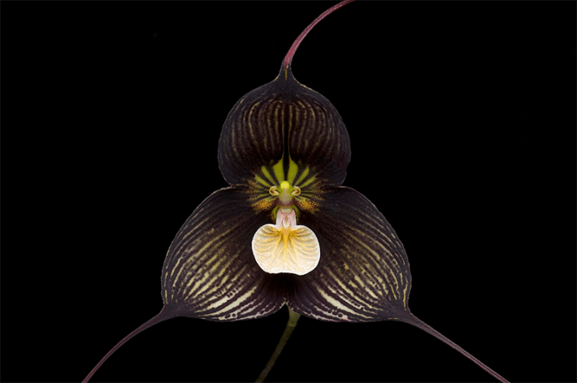
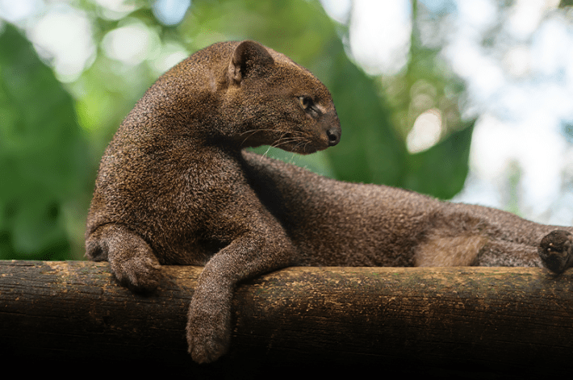

A cloud-forest is a rivermaker.
Cloud-forests form at higher altitudes than rainforests: typically between 3,000 and 8,000 feet above sea level, in steep landscapes of peak, ridge, and valley. The elevation means that cloud-forests are cooler than rainforests, and the drama of their topography means that their rivers are fast, shallow, clear, and rockbedded, compared to the muddier, slower rivers of rainforests.
Altitude and coolness co-create the cloud. Humid air is pushed upward by the land, bringing the water it bears to a condensation point, and forming the mist which cloaks such forests year-round. The mist also reduces direct sunlight, reducing transpiration from the trees and retaining more water within the forest system.
Because this drifting mist infiltrates the full volume of the forest—wandering from ground to canopy, between trunks, into every niche—the available surface area for condensation is maximized. And because cloud-forests are characterized by an astonishing density of air plants, or epiphytes (that is, plants which grow on other plants), this surface area is immense. Liverworts, mosses, ferns, orchids, lichens, and bromeliads throng the trees of a cloudforest; hundreds, sometimes thousands of plants can flourish upon a single big tree, in a proliferating density of floral life greater even than that of a rainforest.
Thus the marrow of the mountain is cracked open, slurped out, and sold.
Much as a bearded person walking through mist will find water droplets condensing upon the hairs of their beard as well as their skin, so the epiphytes of a cloud-forest act as collectors for the moisture suspended in the mist, which in time rolls and drips as water to the forest floor. This gentle, constant run-off is known by forest biologists as fog-drop, and it is what allows cloud-forests to maintain the flow of their streams and rivers even in dry periods. This is why an alternative name for a cloud-forest is a water-forest. This is why river and cloud-forest cannot be separated—for each authors the other.
The interior of a cloud-forest is a steaming, glowing furnace of green. To be inside a cloud-forest is what I imagine walking through damp moss might be like if you had been miniaturized. There, life thrives upon life upon life upon life in a seemingly endless mise en abyme that bewilders the imagination and opens a scale-slide of wonder into which the mind might plummet.
Cloud-forests are among the most biodiverse habitats in the world. Although they account for less than half of 1 percent of the Earth’s land surface, they are home to around 15 percent of known species. A cloud-forest can contain around 400 species of tree in a single hectare; almost half as many as the number of native tree species found across the entirety of the contiguous United States. Among cloud-forests, the most biodiverse are generally agreed to be those of the Tropical Andes. There, a unique abundance and variety of life is created by the proximity of the Pacific and the Andes, which rise from sea level up to more than 20,000 vertical feet in only a few hundred lateral miles.
But millions of hectares of Andean cloud-forests have been lost over recent decades to logging, farming, building, and mining. Over 2 percent of cloud-forest was destroyed globally between 2001 and 2018; in the Andean cloud-forests this rate reached 8 percent. Existing legal protections have slowed but not stopped the loss—and much of that loss has happened in Ecuador.

LIVING DEAD: Here in Los Cedros, a rugged area in the Andes made up primarily of cloud forest, spectacular Dracula orchids thrive. Their swooping petals resemble the Gothic capes of vampires, and they emit a smell like that of rotting meat to attract pollinators. Credit: Eric Hunt / Wikimedia Commons.
Metal mining is the most catastrophic and terminal of cloud-forest interventions. For the gold and copper mining which now predominates in the northern Andes, the method of large-scale extraction is usually open-pit, which requires the digging of a series of vast stepped “benches” to give heavy machinery access to the ore. The establishment of a pit first requires deforestation of the extractive zone, then the construction of a network of access roads for the heavy machinery. Dynamite blasts the bedrock, before large power shovels collect the shattered ore. Trucks transport the ore to the crushers, where it is ground to a fine consistency and mixed with water to make a slurry. The refining process then removes unwanted materials, separates out valuable by-products—and purifies the ore slurry to the desired concentrate.
In the case of gold mining, ore is typically piled into huge heaps for extraction by a technique known as cyanidation or “heap leaching.” The ore is sprayed with a dilute solution of highly toxic sodium cyanide, which filters down through the ore and forms a gas that smells of bitter almonds. Where it encounters gold, it dissolves it and carries it out. Because gold is widely disseminated in low-grade ore, large volumes of sodium cyanide and other solvents are necessary to leach it. Once deployed, these solvents theoretically require storage or safe disposal; the standard technique is to construct an impoundment dam, which retains the by-products in ponds or lakes. In practice, many smaller gold mines just let the solvents flow directly into nearby streams and rivers.
Thus the marrow of the mountain is cracked open, slurped out and sold; thus the cloud-forest and its rivers are poisoned and killed.
Among the most intact and miraculous cloud-forest regions of South America is the Cordillera de Toisán, a branch of the northwestern Andes which runs through the area of Intag, in the Cotacachi canton of Ecuador’s Imbabura Province. In the western extension of the Toisán lies a small massif called the Cordillera de la Plata. And at the southern end of that massif—where earth-forces have rippled the terrain into steep-sided valleys and narrow ridges, and the ground rises to a pyramidal central peak of around 9,000 feet—is Los Cedros, a rugged and remote area of mostly primary cloud-forest, accessible only by foot, mule, or helicopter.
The topographical map of Los Cedros is a beautiful document. It shows the green of forest veined with the blue of rivers and streams. It shows an intricate, lobed landscape, contoured into many small watersheds, each of which collects water from rain and fog-drop to create countless creeks and streams, who become the headwaters of the four main rivers flowing southwards out of the forest: the Río Manduriacu, the Río Magdalena Chico, the Río Verde—and the Río Los Cedros. It is the Río Los Cedros whose route I want to trace back toward its source in the upper gorges of the cloud-forest.
Los Cedros is a living Wunderkammer. It is the home of fabulous beasts, birds, plants, and fungi who could have flown, crawled, and grown straight out of Hieronymus Bosch’s imagination: the spiny pocket mouse, the strangler fig, the white-headed capuchin, the devil’s fingers fungus, the spectacled bear, the dwarf squirrel, the river otter, the jaguarundi, the golden-headed quetzal, the black-and-chestnut eagle . . .
Here lives a frog who can modify the texture of her skin at will, toggling from smooth to grainy in just a few minutes. Here live Dracula orchids, whose purple, swooping petals resemble the Gothic cape of a vampire, and who mimic the smell of rotting meat in order to attract pollinating flies. Here live at least a dozen species of hummingbird, thimblefuls of molten metal who whir from flower to flower. Even their human names seem to have tumbled straight out of myth: the Andean emerald, the long-tailed sylph, the tourmaline sunangel.
Where the streams and rivers flow fast over rapids in Los Cedros, they are green-watered, and where they gather in pools they are blue as a glacier’s heart. Pumas and spotted cats drink from them. White-throated dippers fish them.

BEAST OF WONDER: The enigmatic jaguarundi, a slender medium-sized wild cat native to the Americas, is one of the many fantastic animals that make a home in the Los Cedros forest. Also known as the "otter-cat," these solitary felines travel alone or in pairs and have distinct calls. Photo by Diego Grandi / Shutterstock.
It is not known exactly how old the area of cloud-forest now called Los Cedros is, and how many millennia of continuous flourishing it has performed. But according to the Dry Refugia hypothesis—one of the two dominant paradigms for understanding the Pleistocene pasts of rainforests and cloud-forests in the neotropics—it is plausible that montane forest has existed continuously here throughout the glacial fluctuations of the Pleistocene; that is to say, for around 1.5 million years.
This is a forest who has self-regulated for an exceptionally long time.
And yet, this cloud-forest should not exist.
The slender path leading into its mist should be a 30-foot-wide access road, bulldozed up the ridgeline.
The trees that dwell here, with their shaggy overcoats of epiphytes, should be stumped or burned off.
The smell of bitter almonds should drift through Los Cedros.
In 2017 a small Australian environmental non-profit called the Rainforest Information Centre discovered that a mining concession had been granted by the Ecuadorian government for the Los Cedros cloud-forest.
Where the cadastral map of the valley had once shown only the unbroken green of forest, there was now a large, diagonally hatched grid stamped in scarlet over the lower third of the forest, signifying the concession. The grid covered an area that included the headwaters of three of Los Cedros’s rivers.
Worse was to come. It turned out that the permit for the concession had already been sold to a Canadian prospect generator firm called Cornerstone Capital Resources. Prospect generator firms typically explore for ore-rich locations, then seek to acquire the social license—that is, government and community consent to mine—for sites they believe to have significant mineral potential. They then sell such knowledge and licenses on to larger mining companies for fat profits, while also retaining a minority stake in the venture.
Los Cedros, one of the most biodiverse and bioabundant places on Earth, was suddenly laid open for business. Cornerstone was to seek copper and gold in the cloud-forest, working in alliance with Ecuador’s state mining company, ENAMI.
Los Cedros is the home of fabulous beasts who could have flown straight out of Hieronymus Bosch’s imagination.
In 2017, Cornerstone and ENAMI came with drills, maps, and helicopters to begin their surveying of Los Cedros. They would in due course bring the chainsaws, the feller bunchers, the log loaders, and the de-limbers, to strip the forest of its trees and clear the ground for roads, camps, and the open pit. After that they would bring the blasting teams, the excavators, the leachers, and the river dammers. They came to kill the forest and its waters—and it seemed as if nothing could stop them.
But then on Nov. 10, 2021, something remarkable happened. Something which could only have taken place in Ecuador.
That day a judgment was passed in the Constitutional Court in Quito. It ruled that mining would violate the rights of Los Cedros: both the rights of its creatures and plants to exist, and the rights of the forest and its rivers as a system to “maintain its cycles, structure, functions, and evolutionary process.” That ruling deployed the political might of Rights of Nature articles enshrined in Ecuador’s constitution over a decade earlier, in 2008.It was the first time such rights had taken precedent over economic interests in a court.
During the hearing, local people from the villages bordering Los Cedros had testified about the impact mining would have. It was often the rivers who were the focus of their testimonies. “We have taken the pure water, the clean water, that comes from Los Cedros Forest,” said one witness, “we are defending nature, the right to life, which is water.”
“I grew up here more than 50 years ago,” said another; “when I was a child here, there was water at every step; today there are only rivers in the larger ravines, and if that which originates in the Los Cedros reserve is not defended now, what is going to happen tomorrow?”
The judgment wrapped a protective forcefield around Los Cedros—one so powerful that the mining companies were compelled to evacuate the area within weeks.
The chief judge who ruled on the case? That was wise, watchful Agustín Grijalva Jiménez. And his supporting judge was the extravagant and long-limbed Ramiro Ávila Santamaría.
“The forest helped us,” Agustín recalled to me later, in an openly animist account of how he and his colleagues had formed their judgment; “the strong voice of life” proved a greater influence “than even the legalistic framework.” He and his fellow judges felt “the call of life” from Los Cedros; it “swayed the bench.”
Agustín’s deeply philosophical 124-page ruling found that the Rights of Nature, together with the human right to a healthy environment and to clean water, would be violated were mining to be permitted in Los Cedros. The mining companies were ordered immediately to cease all activities and to make good any damage, and the government was required to guarantee the rights to which Los Cedros was constitutionally entitled.
“A river [or] a forest,” wrote Agustín, are “life systems whose existence and biological processes merit the greatest possible legal protection that a constitution can grant: the recognition of rights inherent to a subject.”
News of this thunderclap judgment echoed around the world. “This ruling is as important to nature as Thomas Paine’s Rights of Man were to our own species,” said Mika Peck, a field biologist who has worked in Ecuador since the 1990s. The British-Peruvian barrister Mónica Feria-Tinta described the Los Cedros ruling as comparable to “the turning-point in the history of human rights of 1948.” In recognizing that nature could bear “legal status and substantive rights,” she said, it marked “the law of the future.” 
Excerpted from Is a River Alive?. Copyright (c) 2025 by Robert Macfarlane. Used with permission of the publisher, W. W. Norton & Company, Inc. All rights reserved.
Lead photo: Kath Watson / Shutterstock
Källförteckning
- Originalartikel: https://nautil.us/this-cloud-forest-should-not-exist-1226267/